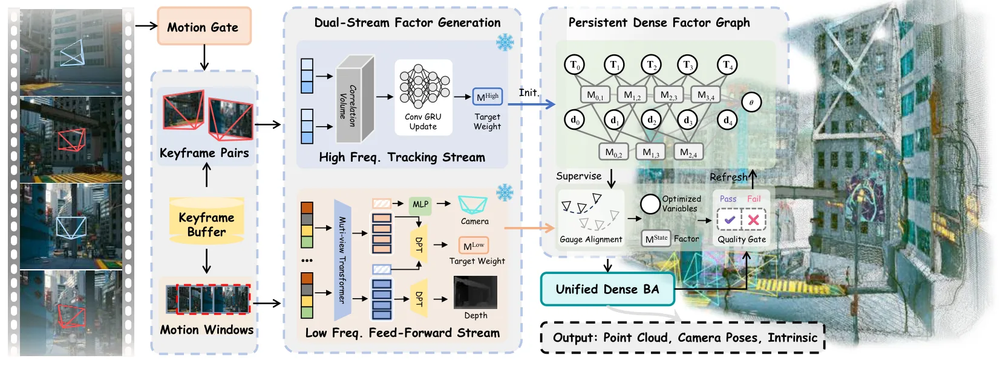

新论文 · 日期 2026-10-04 · score 14 · S层 · Learning + Geometric Optimization SLAM/VIO · cs.CV
内容级别：完整单篇海报
作者：Zhisong Xu, Fan Zhu, Jiawei Qian, Ziyu Chen
评分 14/10
前馈几何先验持久因子图稠密 bundle adjustment状态一致性门控未标定 SLAM双时间尺度
一句话工作总结：把 Flow3r/前馈几何变成稠密 BA 内的 target-weight 因子，与 DROID 式高频跟踪在同一因子图里联合优化，并用状态一致性门控决定低频量测是否刷新；Replica 未标定平均 ATE 0.002 m，7-Scenes 完成度从 0.030 降到 0.015 m。
前馈 3D 模型提供强多视图几何先验，而在线 SLAM 主要依赖局部量测，长序列会累积漂移。已有把两者结合的做法通常把前馈预测当作‘外部几何状态’，事后与在线估计对齐或融合，从而把更广的多视图证据排除在精化 SLAM 状态的优化器之外。F²SLAM 反过来把前馈几何直接转成‘优化原生的目标-权重量测’，挂到一张持久稠密因子图上：高频流维持局部跟踪约束与图连通性，低频流用更广的多视图上下文在通过状态一致性检查后选择性…
Feed-forward 3D models provide strong multi-view geometric priors, while on- line simultaneous localization and mapping (SLAM) relies mainly on local mea- surements and can accumulate drift over long sequences…

新论文 · 日期 2026-10-05 · score 13 · S层 · Geometry Foundation Models / 3D Foundation Models · cs.CV, cs.RO
内容级别：完整单篇海报
作者：Anh Dao, Quan-Dung Pham, Le Danh Vinh, The Anh Nguyen
评分 13/10
视觉语言导航 VLN几何基础模型蒸馏训练期辅助监督VGGT-Ω 教师部署效率具身决策接口
一句话工作总结：训练期用冻结 VGGT-Ω 做多级几何蒸馏 + 相对朝向 + 专家路线进度，部署时只留 Qwen3.5-4B 导航策略；R2R-CE 56.3% SR / 51.4% SPL、RxR-CE 54.3% SR，推理显存 10.24 GiB（比 NaVILA 低 41.4%）。
视觉语言导航（VLN）策略越来越受益于大型视觉语言模型提供的语义先验，但标准的动作监督并不显式要求中间表征保留场景几何、相对朝向或全局路程进度。在推理阶段引入深度估计、显式地图、点云或几何基础模型可以补上这些结构，却会带来额外算力、显存开销与部署时的架构依赖。StageVLN 是一个训练框架：它用“特权”的空间与轨迹引导塑造导航表征，同时保持原有推理通路不变。一个冻结的几何基础模型对分层导航状态提供多级空间引导，相…
Vision-and-Language Navigation (VLN) policies increasingly benefit from strong semantic priors provided by large vision-language models (VLMs). However, standard action supervision does not explicitly encourag…

新论文 · 日期 2026-10-06 · score 11 · S层 · Geometry Foundation Models / 3D Foundation Models · cs.CV
内容级别：完整单篇海报
作者：Zhimin Shao, Xijun Liu, Zhaoliang Zhang, Yutao Tang
评分 11/10
3D 基础模型跨视角注意力掩码自蒸馏token 合并遮挡鲁棒性doppelganger 歧义
一句话工作总结：训练时随机掩掉帧间全局注意力（Bernoulli 掩码率 ρ），向冻结全上下文教师 π³ 做特征+几何双级自蒸馏；推理期用锚帧引导的自适应 token 合并。遮挡大场景下点精度误差仅增 48%（VGGT/π³ 分别 +119%/+128%），8 万级歧义基准 cross-pair 位姿最优。
3D 基础模型的进展使快速三维重建与相机标定成为可能，它们依赖从大量空间数据中学到的 3D 先验。但 all-to-all 全局注意力带来二次复杂度并限制长序列推理；不受约束的跨视角交互还会把来自被遮挡或‘外观相似但几何相距甚远’视角的不可靠证据传播出去。本文提出掩码几何编码器（MGE）：在训练时从全局注意力中策略性地丢弃帧 token，并向一个预训练的全上下文教师模型做蒸馏，从而在“不完整的跨视角上下文”下学到更…
Recent progress in 3D foundation models has enabled rapid 3D reconstruction and camera calibration by leveraging learned 3D priors from vast amount of spatial data. However, the all-to-all global attention des…

新论文 · 日期 2026-10-05 · score 14 · A层 · Robust State Estimation / Uncertainty · cs.RO
内容级别：半海报
作者：Junhyun Nam, Wonse Jo
评分 14/10
视觉 SLAM 漂移神经符号推理人在回路 HITLLLM 符号桥早期预警率 EWR决策级监督
一句话工作总结：概念框架：PSD+RTS 特征经 DNN 给风险，LLM 把专家语言翻成符号规则，LNN 融合规则与硬件护栏得分，仅做决策级监督、不改位姿；EuRoC MH_04 上平均预警 6.2 s（DeepSEE 2.4 s），良标注下 EWR 峰值 91.5%。
数据驱动模型有预测能力，但其‘黑箱’特性在分布外（OOD）环境常产生物理上不一致的输出。本文提出 Hybrid DeepSEE（HDS），一个用于视觉 SLAM 漂移主动预判的人在回路（HITL）神经符号框架：把神经漂移风险估计与符号约束推理结合，并用大语言模型作为推理桥梁，把人类的定性上下文翻译成可解释的符号约束。框架在常规 V-SLAM 估计器之上增加一个约束感知的监督层，实时监控漂移风险并在预定义约束下评估一…
This paper introduces Hybrid DeepSEE (HDS), a Human-in-the-Loop (HITL) neuro-symbolic framework for proactive drift anticipation in Visual SLAM (V-SLAM). While data-driven models offer predictive power, their…